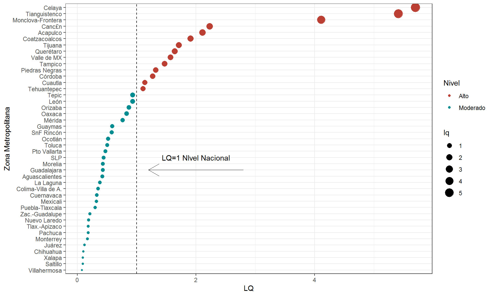
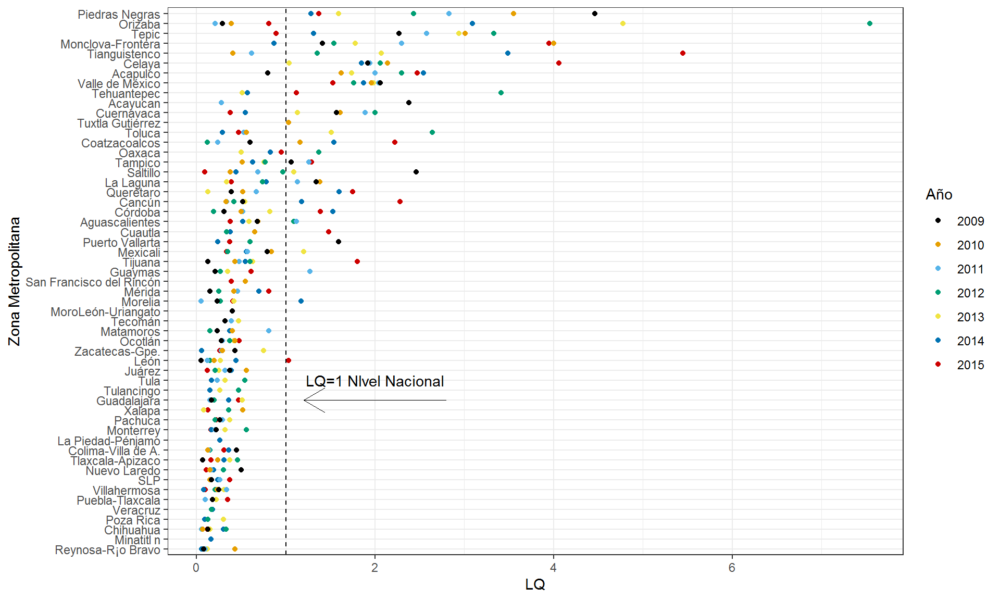
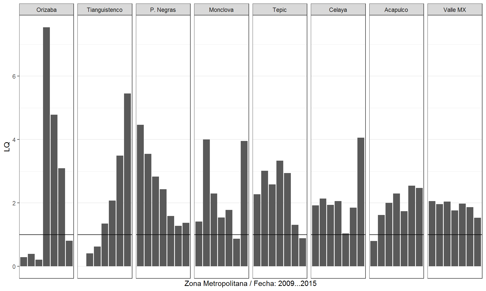

Retomando la perspectiva espacial, es importante determinar la concentración relativa del padecimiento para controlar el sesgo que el tamaño de cada localidad genera cuando se evalúan las cifras absolutas. Con este propósito se estima a continuación el cociente de localización para el año más reciente del periodo de estudio: 2015, considerando las Zonas Metropolitanas como unidad de análisis (Figura 6).
Figura 6: Clasificación del Cociente de localización (LQ) para Zonas Metropolitanas, México 2015.  Fuente: Elaboración propia con datos del SINAIS 2015.
Los resultados aportan un par de elementos de mayor especificidad sobre la distribución territorial del padecimiento. Primero, se encuentra que una cuarta parte de las zonas metropolitanas en México presentan una incidencia superior al contexto nacional (LQ > 1), sin embargo, la mayoría de estas zonas de alta incidencia no pertenecen a la región centro del país, donde se tiene la mayor concentración poblacional. De hecho, entre las tres ZM de mayor incidencia se encuentra la ZM de Monclova, Coahuila, un importante centro de actividad metalúrgica del noreste del país con una población que no rebasa el medio millón de habitantes (CONAPO, 2010)4 y que es reconocido por su la alta concentración de partículas PM105 (AQICN, 2018). En segundo lugar, se confirma la alta concentración de rinitis en importantes centros poblacionales ubicados en la región centro del país, a pesar de que ya se ha controlado por el efecto del tamaño poblacional. Estos incluyen la ZM Valle de México (LQ = 1.62) y Querétaro entre otros. Asimismo, en la región destaca el caso de Tianguistenco, Estado de México (LQ = 5.41) que es la zona de mayor LQ en todo el país, con una concentración relativa de cinco veces el nivel registrado en el contexto nacional.
Además es una ZM situada en una región que comparte un rasgo característico con otros espacios ya detectados con alta incidencia como lo es su régimen climático, que en el caso particular presenta una temperatura mí- nima promedio anual de 3.4°C (Servicio Meteorológico Nacional SMN). Resulta de interés en esta perspectiva espacial, determinar si la incidencia que se observa corresponde a un comportamiento aislado o bien se tiene un patrón sistemático en términos temporales, lo que permitiría establecer pautas de intervención con mayor precisión. Para lograr este propósito, se estima a continuación el cociente de localización para cada año en el periodo (2009-2015). La Figura 7 muestra los resultados.
Figura 7: Cociente de localización (LQ). Zonas Metropolitanas México 2009-2015.

Fuente: Elaboración propia con datos del SINAIS 2009-2015.
La estimación permite distinguir zonas metropolitanas con un patrón sistemático de alta incidencia, por medio de aquellos años que se encuentran a la derecha de la línea punteada de referencia. Destaca nuevamente el caso de dos ZM en el estado de Coahuila, en primera instancia la ZM fronteriza de Piedras Negras y el caso de la ZM Monclova-Fronteras. En el primer caso muestra niveles de LQ > 1 durante todo el periodo. Mientras el caso de Monclova, si bien muestra un patrón persistente elevado, registró una excepción con LQ = 0.87 en el año 2014. Adicionalmente se encuentra que zonas metropolitanas de gran tama- ño en el país como son Monterrey y Guadalajara, no presentan un patrón sistemático de elevados niveles de concentración en egresos hospitalarios por rinitis, un hallazgo contrario a la hipótesis sobre el papel que el fenó- meno de urbanización implica respecto a la incidencia del padecimiento estudiado.
La Figura 8 muestra con mayor detalle la trayectoria temporal de concentración en casos por rinitis de las ZM con mayor persistencia.
Figura 8: Evolución del LQ en principales Zonas Metropolitanas México 2009-2015.
 Fuente: Elaboración propia con datos del SINAIS 2009-2015.
Podemos observar que si bien las ZM consideradas registran un patrón sistemático con LQ > 1, el problema ha tendido a disminuir en algunas zonas, el caso de Piedras Negras, Coahuila es un ejemplo representativo de este comportamiento.
(Para mayor claridad, la línea de referencia indica el nivel de concentración nacional LQ = 1).
De forma inversa la ZM de Tianguistenco, Estado de México, muestra un claro ascenso en la concentración relativa de casos por rinitis. Este nivel de contraste permite contar con elementos para proponer estudios de caso en regiones del país específicas que permitan indagar los determinantes locales.